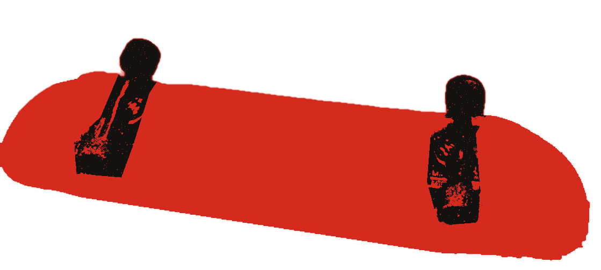

Low OrbitA skate quarterly
重力
Winter 2027¥800 / €6.00
- 重力GRAVITY — mandatory
- 滞空時間HANG TIME — 0.6 s
- 着地LANDING — see p. 12
Spec sheet / Fig. 1
Air time0.6 s
Peak height1.1 m
Board rotation360°
Witnesses4
LandingPending
The first skater to land it did not, strictly, land it. He came down somewhere near the board and walked off.

Up is optional
Down is not
スケートボード
Printed between take-off and landing
Issue 07The gravity issue
Air mail
Do not fold
mid-air